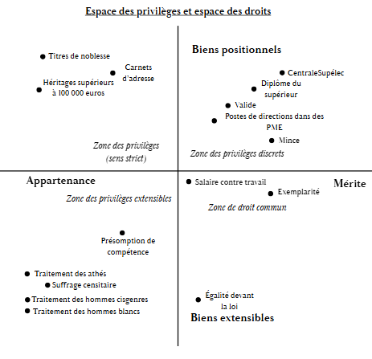
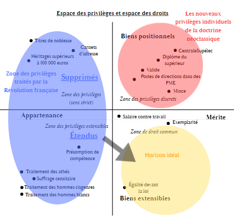
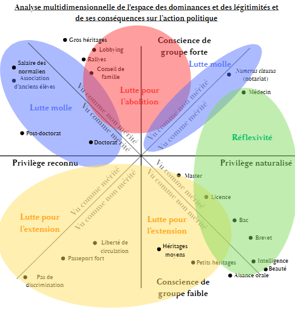

Le masque du mérite
Privilèges stricts, extensibles et discrets : pourquoi nous luttons contre les plus visibles et épargnons les plus sournois
Le privilège, l’absent des champs d’étude philosophiques ?
Ce qui frappe, lorsqu’on s’intéresse au privilège, c’est que le terme a été peu conceptualisé en France ou qu’il a été étudié sous un angle thématique : privilège blanc, privilège du philosophe, privilège de la peinture, etc. Cette notion contraste avec d’autres termes proches, comme les inégalités, les élites, la méritocratie ou le capital. Ainsi, dans la catégorie « philosophie » de la plateforme Cairn, on trouve tout au plus un ouvrage, sept articles de revue et six chapitres d’ouvrage dont le titre contient le mot « privilège », contre plus d’une centaine pour le mot « inégalités » (comptage non exhaustif). De même, le terme n’apparaît ni dans le Dictionnaire de la philosophie des éditions Larousse de 1942, ni dans le Panorama des idées philosophiques de Jacqueline Russ. Cette absence pourrait s’expliquer de plusieurs façons : le privilège n’aurait pas besoin de constituer un champ d’étude à part entière, puisqu’il se trouve à la croisée de concepts qui suffisent à le définir par recoupement ; il se serait banalisé et normalisé au point d’en devenir invisible ; son analyse relèverait davantage de disciplines comme l’économie ou la sociologie ; enfin, le terme ne serait qu’un synonyme moins précis, moins technique et plus situé de son équivalent juridique : l’exclusivité ou l’avantage.
Alors pourquoi parle-t-on tant de « privilèges » ?
À défaut d’avoir été « porté au concept », selon l’expression de François Jullien, le « privilège » demeure néanmoins une réalité tangible dont nous ressentons tous les effets. En effet, ses manifestations sont nombreuses, bien que souvent confuses et mal circonscrites, comme nous le verrons plus loin dans l’article : elles apparaissent en filigrane dans les indicateurs économiques sur la reproduction des inégalités ou de façon explicite dans la presse, particulièrement dans des contextes de fortes tensions sociales. Un article du magazine partisan d’extrême droite Boulevard Voltaire1, daté du 30 septembre 2026, titre ainsi : « Émeutes lycéennes : quand les quartiers privilégiés se posent en victimes » ; une affiche du lycée Victor-Grignard de Cherbourg proclame, le 1er octobre 2026 : « L’éducation est un droit, pas un privilège de riche »2. Les exemples sont nombreux et constituent une véritable contradiction, puisque les privilèges auraient été abolis lors de la nuit du 4 août 1789.
Une définition et un bref historique du privilège
Le privilège vient du latin privilegium et résulte de l’association de privus et de lex : la « loi faite pour un particulier ». Il pouvait d’ailleurs constituer une peine comme une faveur. C’est sous l’Ancien Régime que le privilège devient le principe d’organisation d’une société qui s’appuie alors sur une mosaïque de statuts et de franchises, des « dispenses du droit commun », pour reprendre les mots de l’abbé Sieyès dans son Essai sur les privilèges de 1788. Ainsi, le noble est décapité à l’épée, tandis que le roturier est soumis à la plus horrible des tortures, comme l’écrit Foucault dans Surveiller et punir à propos d’une exécution en 1757 : « Enfin on l'écartela, raconte la Gazette d'Amsterdam. Cette dernière opération fut très longue, parce que les chevaux dont on se servait n'étaient pas accoutumés à tirer ; en sorte qu'au lieu de quatre, il en fallut mettre six ; et cela ne suffisant pas encore, on fut obligé pour démembrer les cuisses du malheureux, de lui couper les nerfs et de lui hacher les jointures... »3
Dans son Discours sur l’origine et les fondements de l’inégalité parmi les hommes (1755), Rousseau distingue, d’une part, l’inégalité physique, qui tient à la nature, et, de l’autre, l’inégalité morale et politique, instituée ou autorisée par la convention humaine, qui « consiste dans les différents privilèges dont quelques-uns jouissent au préjudice des autres, comme d’être plus riches, plus honorés, plus puissants qu’eux, ou même de s’en faire obéir ». Il pose là une nouvelle sémantique, dans laquelle la notion d’inégalité englobe le privilège et le départit de sa nature légitime via la neutralisation du droit divin et naturel. Remarquons que l’utilisation du groupe prépositionnel « au préjudice des autres » brise l’illusion d’un privilège harmonieux : l’avantage de l’un n’est plus la récompense du mérite, mais, au contraire, la spoliation directe d’un autre.
De fait, les privilèges sont abolis par le décret des 4-11 août 1789 portant abolition du régime féodal et des privilèges. Ils sont remplacés par la célèbre formule de la Déclaration des droits de l’homme et du citoyen : « tous les hommes sont libres et égaux en droit ». Sous l’influence des analyses bourdieusiennes du capital culturel, de la sociologie féministe et des Whiteness Studies, l’Institut de recherche et d’éducation sur les mouvements sociaux (IRESMO) les définit aujourd’hui comme un accès facilité aux ressources pour un groupe ou un individu donné. Selon Peggy McIntosh, dans son article de 1988 « White Privilege : Unpacking the Invisible Knapsack », ils sont caractéristiques d’une situation qui n’est pas nécessairement intentionnelle et dont la personne bénéficiaire n’a pas forcément conscience : c’est le cas du privilège blanc ou du privilège masculin, par exemple.
Réflexion autour du privilège
L'article de Peggy McIntosh consacré au privilège blanc comporte, au-delà de sa portée théorique, une dimension militante évidente, condensée dans son titre « Unpacking the Invisible Knapsack », traduit en français par « Déballer le sac à dos invisible » : si le privilège se définit en creux (comme l'absence de poids ou de discriminations quotidiennes face à ce que subissent les personnes racisées), l'enjeu est d'étendre cet avantage en transformant ses manifestations invisibles en droits fondamentaux pour toutes et tous. Présentée ainsi, l’idée paraît simple et évidente, d’autant que l’on présume la situation des personnes privilégiées non intentionnelle et inconsciente. Pourtant, la mise en place de telles politiques égalitaristes pose problème. Par exemple, en 2017, la municipalité de Paris propose de mieux réguler les locations Airbnb dont bénéficiaient les multipropriétaires. Ceux-ci déposent aussitôt un recours collectif devant la Cour de justice de l’Union européenne (CJUE) : il existe bel et bien une conscience de classe au sein de la haute bourgeoisie4. Mais n’y a-t-il pas là contradiction avec l’idée de Peggy McIntosh selon laquelle le privilège caractérise une situation qui n’est pas nécessairement intentionnelle et dont la personne bénéficiaire n’a pas forcément conscience ?
Deux raisons permettent d’expliquer ce paradoxe apparent : d’une part, on peut être conscient de défendre ses intérêts tout en restant aveugle au caractère immérité de ses avantages, souvent naturalisés sous la forme du « talent » ou du « mérite » ; d’autre part, Peggy McIntosh et le couple Pinçon-Charlot ne traitent pas tout à fait des mêmes types de privilèges. Cela nous amène à la distinction suivante : d’un côté, les privilèges positionnels5, plus proches de la conception des Pinçon-Charlot, dont l’intérêt dépend de la rareté (titres scolaires, types d’emploi, signes de richesse ou nombre de propriétés) ; de l’autre, les privilèges extensibles, plus proches de l’idée de Peggy McIntosh, qui sont réservés à certains en raison de leur appartenance (naissance, sexe, couleur de peau), mais qui conserveraient leur intérêt même s’ils étaient étendus à tous (éducation, non-discrimination fondée sur la race ou le genre, droit de vote, par exemple).
Une cartographie du privilège – l’évolution sociale du privilège
Que pouvons-nous retenir des paragraphes précédents ? D’abord, il existe deux conceptions du privilège : l’une relève du droit républicain (égalité de traitement, droit à l’éducation, droit de vote), l’autre du positionnement dans la hiérarchie sociale, qui se dissimule sous le masque complaisant du mérite et du travail. Il peut dès lors être intéressant de cartographier l’espace des privilèges selon la nature des biens et des situations qui font de leurs détenteurs des privilégiés (en ordonnée), ainsi que selon le principe qui régit leur accès (en abscisse). Cette approche permet de faire émerger quatre zones typologiques :6

- Zone des privilèges stricts : ce sont des avantages rares et exclusifs attribués en fonction de l’appartenance sociale (famille, milieu, naissance). Ils perdraient leur valeur s’ils étaient généralisés. C’est la principale cible de la Révolution française de 1789, qui abolit les titres, les droits seigneuriaux, les droits d’aînesse (1790) et les corporations.
- Zone des privilèges discrets : les privilèges discrets sont des avantages dont la valeur dépend, comme pour les privilèges stricts, à la fois de leur rareté et de leur position relative dans la hiérarchie sociale, mais dont l’accès est présenté comme résultant principalement du travail, du talent ou du mérite. Leur caractère privilégié est donc moins visible, ce qui justifie leur qualificatif de privilèges « discrets ». Notons que cet effort s’exerce à partir de conditions initiales inégalement distribuées (capital économique, culturel ou social).
- Zone des privilèges extensibles : ce sont des avantages aujourd’hui réservés à certains groupes du seul fait de leur appartenance (présomption de compétence, sécurité, absence de contrôles abusifs), mais qui conserveraient toute leur utilité si chacun en bénéficiait. La Révolution en a fait une cible partielle en instaurant l’égalité devant l’impôt, l’accès universel aux emplois publics ou l’émancipation des minorités (1789-1791).
- Zone de droit commun : ce sont les avantages universellement accessibles selon le travail ou le besoin à condition que ce travail se fonde sur une base égalitaire.
Parmi ces quatre zones, celle du droit commun apparaît comme la plus « juste », par élimination des autres : les privilèges stricts, qui reposent sur le hasard de la naissance, sont incompatibles avec l’expérience de pensée du voile d’ignorance proposée par Rawls dans sa Théorie de la justice (1971) ; les privilèges discrets n’ont de la justice que l’illusion et les formes, Bourdieu et Passeron ayant démontré avec brio que la méritocratie n’est qu’un mythe au service des dominants, qui viole l’égalité équitable des chances ; enfin, les privilèges extensibles contredisent le principe de non-domination, fondement de la justice chez Philip Pettit.
Dans son ouvrage Privilèges. Ce qu’il nous reste à abolir, Alice de Rochechouart constate que les privilèges continuent de subsister aujourd’hui grâce à trois mécanismes de légitimation : leur naturalisation, leur invisibilisation et la croyance dans le mérite, qu’elle qualifie (à juste titre) d’« opium du peuple au service des privilèges ». Par rapport aux privilèges ante-Révolution, ceux-ci se sont individualisés (le champ du privilège se déplace vers la droite), évolution que l’autrice attribue aux doctrines néolibérales.

Le privilège à la base des luttes politiques, vraiment ?
La suppression ou l’extension des privilèges constituent les deux mots d’ordre des luttes sociales. Pourtant, Alice de Rochechouart constate une dépolitisation instrumentalisée des privilèges, qui passe notamment par l’individualisation croissante des sociétés occidentales. Aujourd’hui, alors que le mouvement lycéen prend une ampleur insoupçonnée et cristallise une crise sociale durablement installée en France, sur quoi portent les revendications ? Essentiellement sur de meilleures conditions d’apprentissage et le remplacement plus systématique des professeurs, deux demandes qui relèvent des privilèges extensibles, et non des privilèges discrets. Parcoursup lui-même n’est remis en question qu’en raison de l’opacité de ses critères de sélection, tandis que son fondement (l’accès aux études selon le mérite) est peu ou pas questionné, alors même qu’il repose sur le privilège extensible et peut produire du privilège discret. Les luttes politiques portent davantage sur les oublis de la Révolution française, c’est-à-dire sur les privilèges stricts et extensibles, que sur les nouveaux privilèges discrets, pourtant largement critiqués.
Pourquoi cette lutte à deux vitesses ?
Lorsqu’on s’intéresse aux luttes portant sur le privilège, des différences apparaissent selon que celui-ci est naturalisé ou reconnu comme tel, et considéré comme mérité ou non. La conscience de groupe et l’individualisation du privilège jouent également sur le type de lutte engagée. Nous en distinguerons quatre :
- La lutte active pour l’abolition du privilège : elle concerne les grands oublis de la Révolution française, notamment les privilèges stricts détenus par une minorité dotée d’une forte conscience de groupe et qui manœuvre consciemment pour conserver ses avantages.
- La lutte active pour l’extension du privilège : elle concerne davantage les privilèges extensibles, généralement visibles et reconnus comme tels, qu’ils soient mérités ou non.
- La lutte molle : zone tampon, elle se caractérise par la reconnaissance d’un privilège considéré comme mérité et comme le résultat d’un travail. Les moyens engagés sont donc relativement limités.
- La réflexivité n’est pas une lutte en elle-même : le privilège est à ce point naturalisé et associé au mérite et à l’effort, et si dilué dans la société qu’il traverse la plupart des groupes sociaux, qu’il ne fait plus l’objet d’une lutte.

- Décryptage : qui oriente Les Républicains vers l’extrême droite ? | Sciences Po Recherche↩
- https://static.actu.fr/uploads/2026/10/1db190068eba641c190068eba15c19v-960x640.jpg dans l’article : Vidéo. Colère dans les lycées à Cherbourg : deux lycéens racontent leur journée mouvementée↩
- Michel Foucault, Surveiller et punir.↩
- Monique Pinçon-Charlot et Michel Pinçon, Sociologie de la bourgeoisie.↩
- Fred Hirsch, Les limites sociales de la croissance.↩
- Construit à partir de la « roue des privilèges » d’Alice de Rochechouart dans Privilèges. Ce qu’il nous reste à abolir.↩